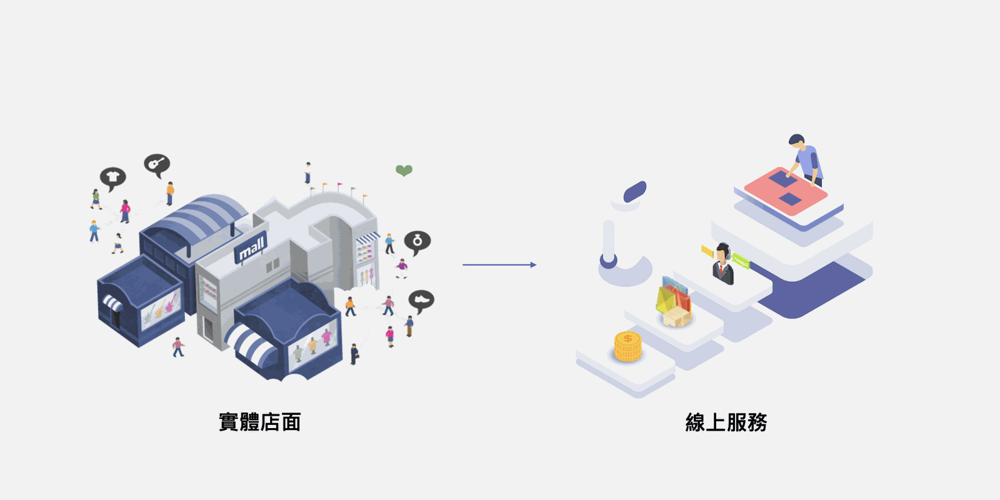
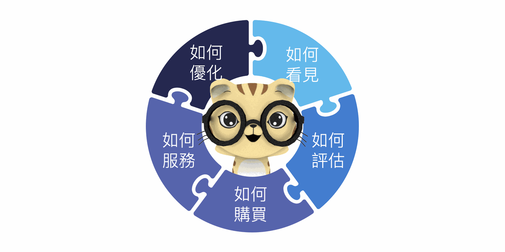

近期對話式商務興起，人工智能股份有限公司(Ai3)也有在11月底的時候分享過對話式商務理論，有興趣的朋友們可以連結到對話式商務是什麼？企業服務、行銷、導購策略的全新服務設計思考，本篇延續先前理論並說明可以如何應用智能客服提供優質的線上服務及行銷流程。

依據協助企業導入智能客服經驗，Ai3盤點出五大重點須做流程設計：產品及智慧服務如何被看見、評估、購買、售中後服務、評估優化。
一、智能機器人產品如何被客戶看見
顧客可使用的入口和接觸點很重要，可以參考競業服務通路或是進行內部評估是否可擴充更貼近顧客需求的通路，像是近期較多人使用的Line、WhatsApp、WeChat、Facebook、IG、Youtube等社群平台。另外，在Chat的世界裡，又要如何主動推播相關產品給予相對應的客戶名單，讓客戶得知資訊後評估。
依據某健康減肥餐飲為例，除了線下的客戶服務外，線上也可以創造出新智能服務，台灣人經常使用的LINE、FB、網頁、App等平台，透過這些平台的方便性，將相關智能客服建置在此平台上，使得服務流程更多元、更簡便。
二、企業產品如何被評估
當已完備了顧客的接觸點後，需要討論並且設想當原本臨櫃或各業務單位真人般的服務可如何簡化並且快速的呈現在行動裝置（手機、平板、電腦）內的小視窗裡。
依據此次健康減肥餐智能機器人的應用案例，以往一般顧客上門時，會先填寫一張類似健檢的表格，後續營養師會依據表格內容以及相關器具判斷這個人的體脂肪、BMI、是否肥胖等個人狀態，在依據個人狀態去調配不同類型的營養餐。那我們將這整個診斷和服務流程做標準化、自助化和簡化後，在以各類圖片、卡片、文字、影片等形式做互動呈現，使得顧客/消費者可自助使用，又不覺得艱難。
以往健康營養師再行銷的動作大多為打電話給予曾經填寫過資料的客人，且依據不同資料分析推薦不一樣的產品，那如何將此再行銷服務流程從撥打電話且由真人判斷適合的產品，改為訊息通知且由智能客服判斷。
三、企業產品如何被購買
當顧客/消費評估後想要購買相關產品，後續如何引導購買以及購買方式尤為重要，依據以往經驗會建議購買方式越簡單方便越好。不論今日是以衝動性消費客群或是評估思考以久的客群，快速及簡便的購買方式是最好的方法，且建議眾多賣家們，產品介紹及說明後面須做引導購買的動作，既可以有效介紹產品又能衝擊營業額。
四、智能客服如何做售中、後服務
無論是產品評估、購買、後續關懷服務整段流程都需要做合適的設計，哪些情境是可以使用智能機器人輔助，哪些狀態需要專業人員進行評估，都需要做到無縫接軌的概念。一般Ai3專業團隊會與企業溝通，可被標準化、簡化的服務評斷部份由智能機器人進行服務，評斷後可提供顧客/消費者選擇是否轉接真人服務(語音或文字)，轉接過程的銜接建議須方便且快速完整，顧客/消費者無需等待過久時間或是轉跳畫面；客服人員/諮詢師可完整接收到先前聊天或銷售機器人溝通中的所有訊息。
依據營養餐為例，制式化的諮詢過程可使用智能機器人進行擬人化的判斷BMI數值是否肥胖，若為肥胖會建議食用熱量較低的營養餐；如有素食需求或對特定食物過敏為特殊案例，則會建議顧客/消費者轉接營養師做更進階的線上電話(WebCall)或文字服務(LiveChat)。
五、產品及智能客服流程如何被評估優化
無論是「人」還是「機器人」提供的服務，都需要不斷的透過相關顧客/消費者回饋的體驗滿意程度和建議進行優化，達到使用者體驗(UX)的提升。企業可以依據「質化」內容和「量化」數據進行分析，「量化」數據主要是協助判斷大方向須前往的位置，例如：智能機器人設計流程分析出經常有人在做產品/服務諮詢（每日1萬筆），但卻少有人透過智能機器人購買產品（每日10筆），這樣的營業額轉換率是否存在問題，購買產品流程是否需要調整？
如需要做服務流程的調整，建議可做「質化」評估方式，可以找意見領袖(KOL)或是經常購買但卻不在智能客服內購買的客群內挑出幾位顧客/消費者做諮詢，了解他們不透過這個平台進行購買動作的原因後，進行服務流程優化調整。